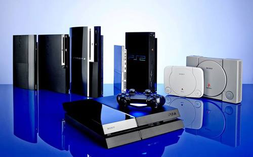
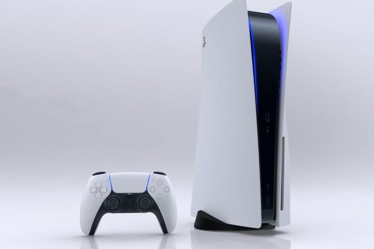
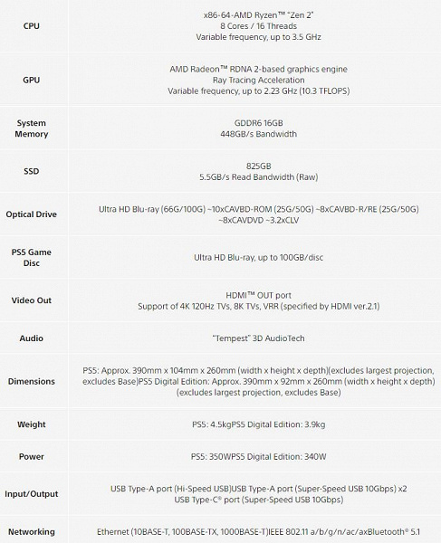
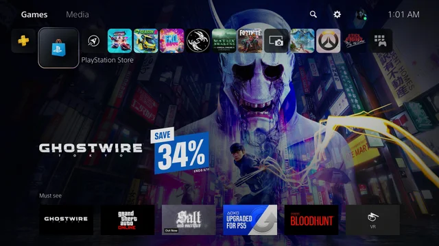
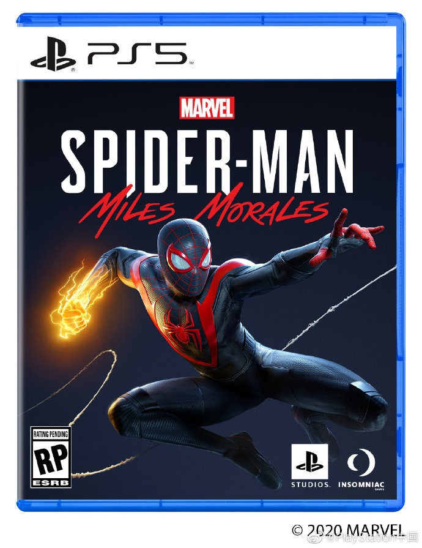

PlayStation 5
PlayStation 5 (PS5) — це домашня гральна консоль, розроблена Sony Interactive Entertainment. Анонсована у 2019
році як наступниця PlayStation 4, обмежені територіально продажі розпочалися 12 листопада 2020. Консоль вийшла
у двох варіантах, як базова система PlayStation 5, що містить Ultra HD Blu-ray привід для читання оптичних
дисків з відеоіграми разом із цифровим завантаженням через PlayStation Store, та дешевший цифровий варіант без
дисковода, з підтримкою тільки цифрового завантаження. Її головний конкурент — Xbox Series X.
PlayStation 5 оснащена спеціальним твердотільним
накопичувачем (SSD), призначеним для високошвидкісної передачі
даних, що дозволяє значно покращити графічну продуктивність. Апаратне забезпечення також оснащено спеціальним
графічним процесором AMD, здатним до трасування променів, підтримку дисплеїв з роздільною здатністю 4K та
високою частотою кадрів, новим звуковим обладнанням для 3D-звукових ефектів у режимі реального часу та
зворотною сумісністю з більшістю ігор PlayStation 4 та PlayStation VR.
Зміст
- Історія
- Характеристики
- Дизайн
- Технічні характеристики
- Можливості
- Програмне забезпечення
- Контролер
- Ігри
- Продажі
- Примітки
Історія
Перші новини про PlayStation 5 надійшли від провідного архітектора Марка Черні в інтерв'ю журналу Wired у
квітні 2019 року.На початку 2019 року у фінансовому звіті Sony за квартал, який закінчився 31 березня 2019
року, зазначалося, що нове обладнання наступного покоління знаходиться на стадії розробки і буде поставлятися
не раніше квітня 2020 року.У другому інтерв'ю журналу Wired у жовтні 2019 року Sony заявила, що має намір
поставити консоль наступного покоління у всьому світі до кінця 2020 року[4]. Поточні технічні характеристики
обладнання були опубліковані в жовтні 2019 року.На виставці CES 2020 Sony представила офіційний логотип
платформи, що відповідає аналогічному мінімалістичному стилю попередніх консолей і бренду PlayStation.Повні
характеристики були розкриті на Інтернет-презентації Черні і опубліковані Sony та Digital Foundry 18 березня
2020 року.
Основна презентація ігрової бібліотеки для PlayStation 5 була запланована на 4 червня 2020, але була відкладена
до 11 червня у світлі протестів через Джорджа Флойда. У цій презентації також відбулася прем'єра дизайну
PlayStation 5.
У серпні 2020 року компанія Sony відкрила передзамовлення на консоль PlayStation 5: користувачам екосистеми PS
(спочатку із США) було запропоновано встати у віртуальну чергу, участь в якій дає право на першочергове
приставки нового покоління.
12 вересня 2020 року в офіційному блозі PlayStation повідомлено, що презентація приставки нового покоління
PlayStation 5 запланована на 16 вересня о 23:00 за київським часом. На онлайн-заході, що розрахований на 40
хвилин, компанія хоче ще раз показати деякі ігри, які будуть доступні з моменту офіційного релізу консолі і
вийдуть в майбутньому. Трансляція події відбудеться на платформах Sony на Twitch і YouTube. 16 вересня під
час онлайн-конференції Sony оголосила вартість PlayStation 5 — $499 (з дисководом) або $399 (без приводу). В
Європі консолі коштуватимуть 499 і 399 євро відповідно (для України — 15999 і 12999 грн). Початок продажу PS5 —
12 листопада (в Україні — 19 листопада).За перші п'ять тижнів було продано 3,73 мільйона консолей,
що стало рекордом продажів (проданий тираж конкурентної моделі Xbox Series X / S — близько двох мільйонів).
У лютому 2021 року почалися масові скарги власників консолі на її контролер DualSense. Його стіки передавали
хибну інформацію про рух, коли не використовувались. Команда iFixit 19 лютого визначила, що проблема полягає в
бракованих потенціометрах, термін служби яких складає всього лиш 417 годин активного використання (за зразок
бралася гра Call of Duty: Warzone) або 209 днів за умови щоденного грання по 2 години.
На початку лютого 2022 року з’явилися повідомлення про можливу появу підтримки української мови інтерфейсу на
PlayStation 5. Її було офіційно додано 23 березня. Тоді ж підтримка української мови з’явилася й на
PlayStation 4.
Характеристики
Дизайн
Консоль має форму паралелепіпеда зі злегка ввігнутими гранями. Розміри складають 38.8 x 8 x 26 см — значно більше, ніж PlayStation 4. Маса — 4,5 кг. Бокові грані прямокутні з заокругленими краями, виготовлені з білого матового пластику. На їх зовнішньому боці є логотип PlayStation, а на внутрішньому — заглиблений логотип Sony. Вони можуть зніматися для нанесення малюнків чи й цілковитої заміни. Бокові грані спереду підсвічуються синім світлом. Передня грань виготовлена із глянцевого пластику, вона звужується, нагадуючи римську цифру V. Попереду містяться порти USB-A та USB-C. Вгорі розміщено два ряди вентиляційних отворів. «PS5» може встановлюватися як вертикально, так і горизонтально з використанням спеціальної підставки. Версія з дисководом Blu-ray асиметрична, маючи з правого боку випуклість
Технічні характеристики
Консоль оснащена 8-ядерним 16-потоковим процесором на основі мікроархітектури AMD Ryzen Zen 2, виготовленим за
7-нанометровим технологічним процесом. Частота процесора змінна, максимум 3.5 ГГц
Графічний процесор являє собою кастомний AMD Radeon, який використовує мікроархітектуру RDNA 2, має підтримку
трасуванням променів реального часу. Частота графічного процесора складає 2.23 ГГц, продуктивністю 10.3
терафлопс. Консоллю використовується оперативна пам'ять GDDR6 обсягом 16 Гб зі швидкістю передачі даних 448
Гб/с при ширині шини 256 біт.
Для зберігання постійних даних «PlayStation 5» використовує NVMe SSD обсягом 825 Гб зі швидкістю передачі даних
5.5 Гб/с. Це дозволяє водночас тримати на консолі в середньому 16 ігор. Консоль приймає ігри, записані на диски
Ultra HD Blu-ray. Вона здатна відтворювати відео в роздільності 8K, а 4K — при частоті 120 кадрів/с. Звук
відтворюється за технологією «Tempest» 3D, що дозволяє симулювати звуки, створювані численними різними
об'єктами, залежно від довкілля та характеристик поверхонь.
Консоль оснащена модулем Wi-Fi IEEE 802.11ax, позаду розташовані роз'єми Gigabit Ethernet, два USB A, HDMI 2.1
та роз'єм кабеля живлення.
Можливості
Програмне забезпечення
PlayStation 5 має повністю оновлений користувацький інтерфейс[21], глибоко інтегрований до відеоігор[19]. На CES 2020 Sony представила офіційний логотип для платформи, який відповідає мінімалістичному стилю попередніх консолей і бренду PlayStation[22]. Головне нововведення в інтерфейсі, ці картки, що інформують про стан виконання того чи іншого завдання, середній час, витрачений на його виконання іншими гравцями, та відео з підказками. З цих карток можна швидко перейти до додаткових завдань у грі, оминаючи внутрішньоігрові меню. Консоль підтримує такі відеосервіси, як Netflix, Disney+, Amazon Prime Video, Hulu, Peacock і Apple TV, а також більш нішеві на кшталт Twitch, Funimation, NFL Sunday Ticket, ESPN, Vudu, Tubi, WWE Network і Crunchyroll
Контролер

Контролер DualSense був представлений 7 квітня 2020 року. Назву контролера цілковито змінено замість збільшення
ревізійного номера DualShock. Він базується на дизайні контролерів серії DualShock, але з модифікаціями, що
забезпечують більшу ергономічність та більшу ємність акумулятора.
На відміну від попередніх контролерів DualShock, DualSense має двоколірне забарвлення (біле з чорним) та
монохромні кнопки дії. Поверхня покрита мініатюрними випуклими значками фірмових кнопок PlayStation. Світлова
панель була переміщена з верхнього краю в обидві сторони тачпада, і хоча контролер підтримує більшість тих же
кнопок, що й DualShock 4, він змінює кнопку «Надіслати» на «Створити».
DualSense має сильний тактичний зворотний зв'язок за допомогою віброприводів, що доповнюється звуком з
динаміків контролера. На відміну від попередніх моделей, віброприводи використовують не обертання тягарців, а
тягарці, що рухаються вздовж однієї осі, подібно до мембрани динаміка. Вони дозволяють передавати різною
частотою вібрації такі дрібні деталі, як фактуру поверхні, по якій рухається персонаж, падіння крапель дощу
тощо. Вбудований мікрофон дозволяє гравцям розмовляти з іншими гравцями, використовуючи лише контролер без
додаткової гарнітури.
DualSense має пристосовувані тригери, які можуть змінювати опір в міру необхідності, надаючи такий досвід, як
відчуття натягнення тятиви лука чи опір педалі газу автомобіля. З комунікацій є порт USB-C, який замінює собою
MicroUSB в DualShock 4, і TRS (3.5mm) аудіороз'єм.
Ігри
На The Game Awards 2019 компанія Counterplay Games анонсувала Godfall — перший проєкт для PlayStation 5 який
вийшов відразу після виходу консолі.Підтверджені ігри для PlayStation 5: The Lord of the Rings: Gollum, Watch
Dogs: Legion, Gods and Monsters, Rainbow Six Quarantine, Outriders і гра без назви від «Bluepoint Games».
У жовтні 2019 року Марк Черні заявив, що перехід від PlayStation 4 до PlayStation 5 має бути «м'яким». PS5 буде
сумісна з іграми PlayStation 4 та PlayStation VR, частково завдяки однаковій апаратній архітектурі обох
систем. Sony заявила, що її команда розробників працює над забезпеченням сумісності, але їй ще належить
визначити, наскільки повною буде ця зворотна сумісність. 11 червня 2020 року на презентації Playstation
Future of Gaming було показано саму консоль, а також додатково декілька нових ігор, що виходитимуть на
платформі PlayStation 5.
- Horizon:Forbidden west
- Hitman III
- Ghostwyre:Tokyo
- Marvel's Spider-Man: Miles Morales
- Ratchet & Clank: Rift Apart
- Demon's Souls
- Gran Turismo 7
- Returnal
Продажі
Станом на 28 квітня 2021 року було продано 7,8 млн PlayStation 5. З них 3,3 млн — в останній чверті 2020 року. Це зробило консоль успішнішою за її попередницю PlayStation 4, що за підсумками першого фінансового року продалася накладом 5,7 млн.